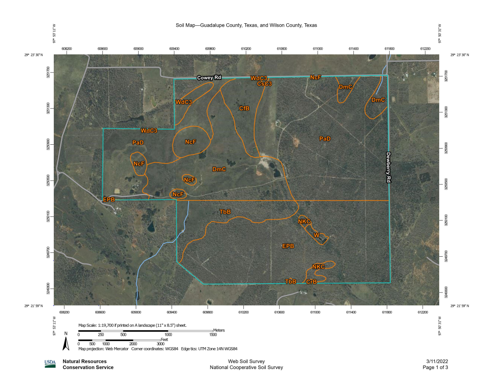
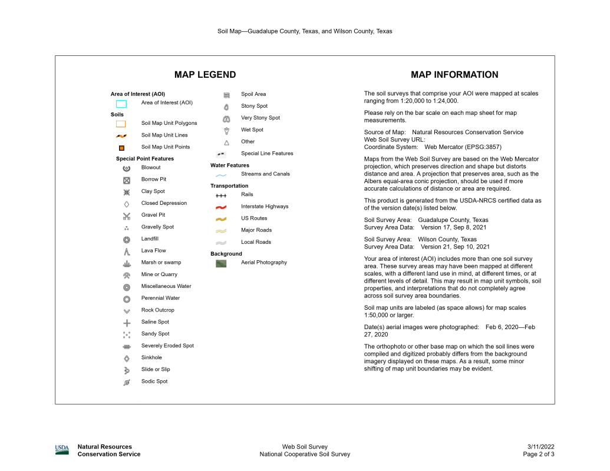

Dirt
The dirt primarily found on the property is sandy loam with outcropping of clay and sand. Sandy loam should be good for growing crops and construction.



Crockett loam - CfB, CsC3, and CrB - Mainly used for growing cotton, grain sorghums, and small grain, but more than half the acreage is now in pastures. Native vegetation is prairie grasses such as bluestems, indiangrass, switchgrass, and gramas, with scattered elm, hackberry, and mesquite trees.
Robco-Tanglewood Complex - DmC - These soils are used mainly for pasture and rangeland. Pastures are improved bermudagrass or native grasses. Tree species are mainly post oak and blackjack oak with an understory of yaupon, grasses, and other shrubs. Seasonal water table: Episaturation usually occurs above or near the top of the argillic horizon between depths of 46 to 122 cm (18 to 48 in) of the surface during the months of January to April in most years.
Nebgen-Jedd Complex - NcF - Gravelly sandy loam.
Patilo and Arenosa soils - PaD - Livestock grazing and wildlife habitat with a few areas cultivated to peanuts and watermelon in the past
Native vegetation: sand post oak and blackjack oak with greenbrier, forbs, and mid-tall grasses in the openings and beneath the tree cover. The major use is livestock grazing. A few areas are used to grow peanuts, watermelons, improved bermudagrass, and weeping lovegrass. The native plant community is an open savannah of sandjack oak, post oak, and blackjack oak trees. Yaupon shrubs are associated with the trees. The herbaceous component is tall and midgrasses dominated by little bluestem, yellow and slender indiangrass, and brownseed paspalum. A thin stand of purple lovegrass, red lovegrass, woolly sheath threeawn, Halls panicum, and thin paspalum occupy spaces between the tall grasses. Continuous overgrazing or over rest and the absence of fire tend to allow a vegetative shift towards woody species.
Windthorst fine sandy loam - WdC3 - The major uses are livestock grazing and hay production, but some areas are cultivated; peanuts, sorghums, and small grains are the main crops. The native plant community is post oak and blackjack oak trees with an understory of little bluestem, indiangrass, greenbrier, and annual grasses.
Aluf and Hitilo soils - EPB - Mostly sand.
Nocken stony soils and rock outcrop - NKC - Very stony sandy clay loam.
Papalote loamy fine sand - TbB - Sandy loam.
Water - W - Water. Only one mapped is the pond in the woods, but there are many other water features.